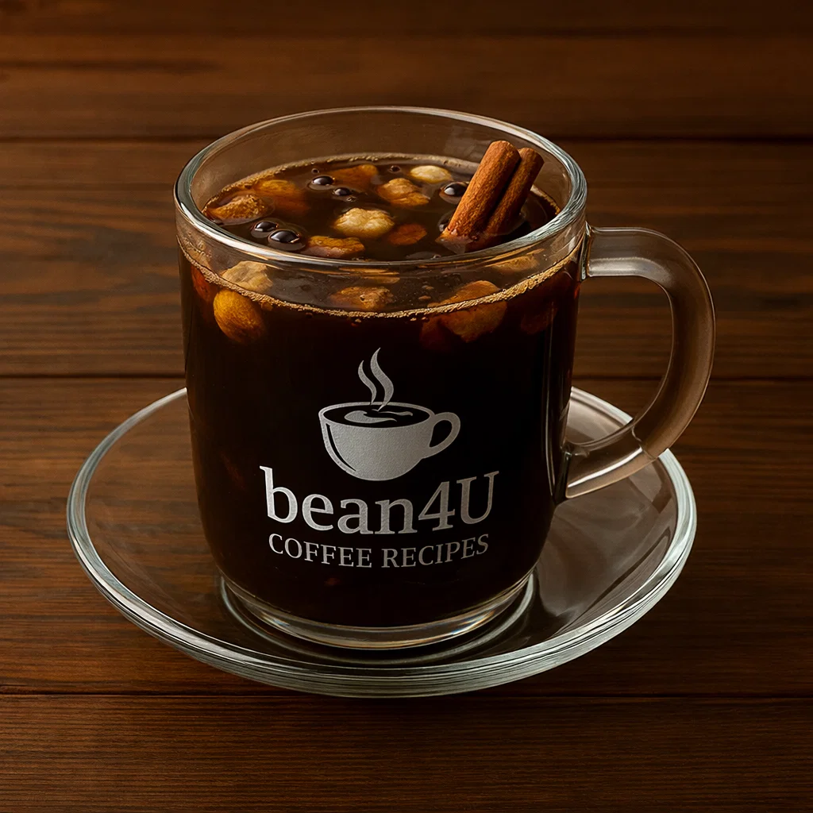

Café de Olla

Ingredients
- 4 cups water
- 4 tbsp coarsely ground coffee
- 1/4 cup piloncillo or brown sugar (adjust)
- 1 cinnamon stick
- Optional: star anise, orange peel
Preparation
- Bring water, piloncillo, and cinnamon to a simmer in a pot.
- Add coffee grounds, reduce heat and simmer 3–5 minutes.
- Remove from heat, let settle 2 minutes, strain into mugs and serve.
- youtube short quickly explaining it:
- short Explanation
Video from @mexicancoffee
Channel